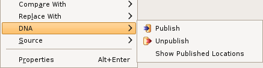

The Resource Context Menu consists of these actions: publish, unpublish, and show published locations. The publish and unpublish actions will be enabled when one or more resources (i.e, project, folder, or file) in the workspace are selected. When publishing, the selected resources will be uploaded to a DNA repository workspace. When unpublishing, the selected resources will be removed from a selected DNA repository workspace (if they exist there). If a resource has already been published using the current Eclipse workspace, the show published locations action will be enabled.
Here is what the Resource Context Menu looks like:
Files can be filtered out of publishing and unpublishing operations even though they have been selected. Use the DNA Preferences Page to filter out files contained within the selection based on their file extensions or by the name of the folder, or ancestor folder, they are contained within.